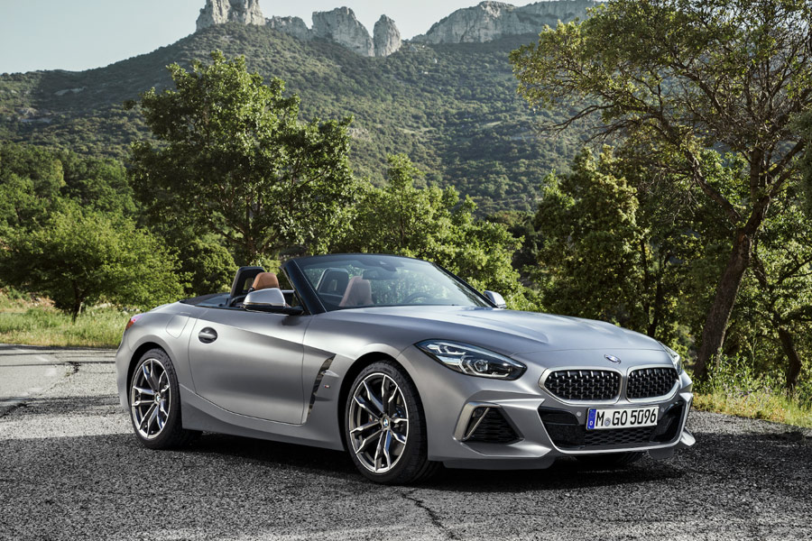

The special fascination of the BMW Group not only lies in its products and technology, but also in the companys history, written by inventors, pioneers and brilliant designers. Today, the BMW Group, with its 31 production and assembly facilities in 15 countries as well as a global sales network, is the world’s leading manufacturer of premium automobiles and motorcycles, and provider of premium financial and mobility services.
The brand stands for innovative high-performance vehicles

Driven by motorsport, the BMW M automobiles more than live up to the highest standards of agility, dynamics and power. Powerful engines combined with an expressive design, exclusive accessories and high functionality let you feel just how much passion lies in every single part of these high-performance automobiles.
The world is in motion. We are in motion. And motion always means something exciting: change. BMW i is a far-reaching and ground-breaking concept for sustainable mobility, presenting visionary electric vehicles and networked services, inspiring design and a new understanding of what premium means strongly defined by sustainability. Not tomorrow, but today. BMW i proof that sustainability and pure driving pleasure can complement each other perfectly.

BMW i models are at the forefront of the future of mobility. Established in 2010, BMW i develops vehicles with full electric or partial electric drives. But more than that, these models inspire a new understanding of the relationship between the car and sustainability.
Two-seater, open-top vehicles that were all about the joy of driving. So "Z" could stand for the German word for future, "Zukunft". And it's true that all Z-Series models are characterized by exceptionally creative and visionary car features.
An irresistible two-door sports car, embodying everything a roadster should be.
A vehicle that's ready for anything. With the power, cargo space, and style that delivers on any road, or any situation.

The BMW X Series is unique in its determination and the desire to stand out from the rest with individual vehicles that carry the typical X gene: Uncompromising with sporty, rugged looks and performance. And all this with the driving dynamics and agility that have always been the hallmarks of BMW.
© 2022 cyber programmer